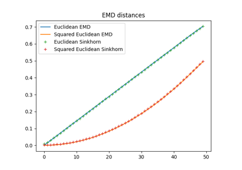
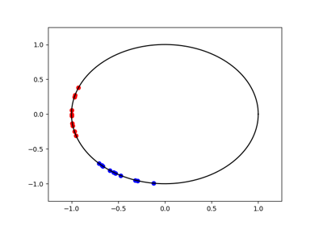
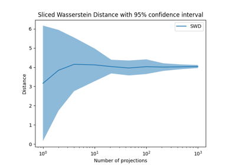
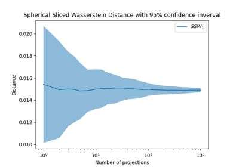

OT in 1D and Sliced Wasserstein

Geometry of OT distances

OT distance on the Circle

Sliced Wasserstein Distance on 2D distributions
Sliced Wasserstein Distance on 2D distributions

Spherical Sliced Wasserstein on distributions in S^2
Spherical Sliced Wasserstein on distributions in S^2